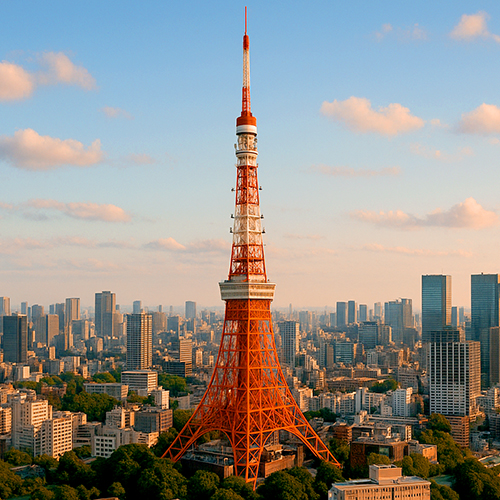

Tour de Tokyo – Symbole Iconique Rouge et Blanc de Tokyo
La Tour de Tokyo (東京タワー), achevée en 1958, est l'un des monuments les plus célèbres du Japon et un symbole de la renaissance et de la modernisation de Tokyo après la guerre. Avec une hauteur de 333 mètres, elle a été la structure la plus haute du Japon jusqu'à l'achèvement de la Tokyo Skytree en 2012. Sa structure inconfondable en treillis rouge et blanc est immédiatement reconnaissable et attire des millions de visiteurs chaque année.
Importance Historique et Design
Inspirée de la Tour Eiffel à Paris, la Tour de Tokyo a été construite comme une tour de communication et de transmission pour soutenir l'industrie de la télévision et de la radio en pleine expansion au Japon. En plus de son utilisation pratique, elle est devenue une icône culturelle, apparaissant dans d'innombrables films, anime et œuvres d'art, symbolisant la résilience et le progrès technologique de Tokyo pendant l'ère Showa.
Plateformes Panoramiques et Expérience du Visiteur
La Tour de Tokyo offre deux principales plateformes d'observation : le Main Deck à 150 mètres et le Top Deck à 250 mètres. De ces hauteurs, vous pourrez profiter de vues spectaculaires sur le paysage urbain de Tokyo, y compris des lieux célèbres comme Roppongi Hills, Shibuya et, par temps clair, même le Mont Fuji. La tour accueille également des événements spéciaux d'illumination saisonnière, ce qui augmente son attrait.
Attractions et Services
La tour abrite plusieurs attractions, dont un musée de cire, un aquarium, des boutiques de souvenirs et des restaurants offrant une cuisine japonaise et internationale avec des vues panoramiques. Le complexe FootTown à la base de la tour est un centre de divertissement animé, idéal pour les familles et les voyageurs seuls.
Comment Arriver et Conseils Utiles
Située dans le quartier de Minato, la Tour de Tokyo est facilement accessible depuis plusieurs stations de train comme Akabanebashi (Ligne Toei Oedo) et Kamiyacho (Ligne Tokyo Metro Hibiya). Il est recommandé de la visiter au coucher du soleil ou le soir pour profiter de vues spectaculaires illuminées. Les billets peuvent être achetés en ligne ou à l'entrée, avec des pass combinés disponibles pour des expériences supplémentaires.
Pourquoi Visiter la Tour de Tokyo ?
Que vous soyez intéressé par l'histoire moderne du Japon, l'architecture ou les vues panoramiques époustouflantes, la Tour de Tokyo reste une destination incontournable. Sa combinaison de charme historique et de vitalité urbaine en fait un symbole intemporel de l'esprit et de l'innovation de Tokyo.
Informations pour les Visiteurs
- 🌸 Adresse : 4 Chome-2-8 Shibakoen, Minato City, Tokyo 105-0011, Japon
- 🌸 Horaires : 9:00 – 23:00 (dernière entrée à 22:30)
- 🌸 Billets : Adultes ¥1 200 (Main Deck), ¥3 000 (Top Deck + Main Deck)
- 🌸 Accès : Station Akabanebashi (Ligne Toei Oedo), Station Kamiyacho (Ligne Tokyo Metro Hibiya)
Tags : Tour de Tokyo, symbole de Tokyo, tour panoramique Tokyo, attractions Minato, vues panoramiques Tokyo, voyages au Japon, tour de Tokyo
Vous prévoyez de visiter la Tour de Tokyo ?
Pour vivre une expérience vraiment immersive et enrichissante, nous vous conseillons de réserver un guide privé certifié de notre équipe. Tous nos guides sont des professionnels agréés et reconnus par le gouvernement japonais, et offrent des visites personnalisées en fonction de vos intérêts. Contactez votre guide sélectionné à l'avance pour vérifier la disponibilité et recevoir une assistance experte pour votre voyage.